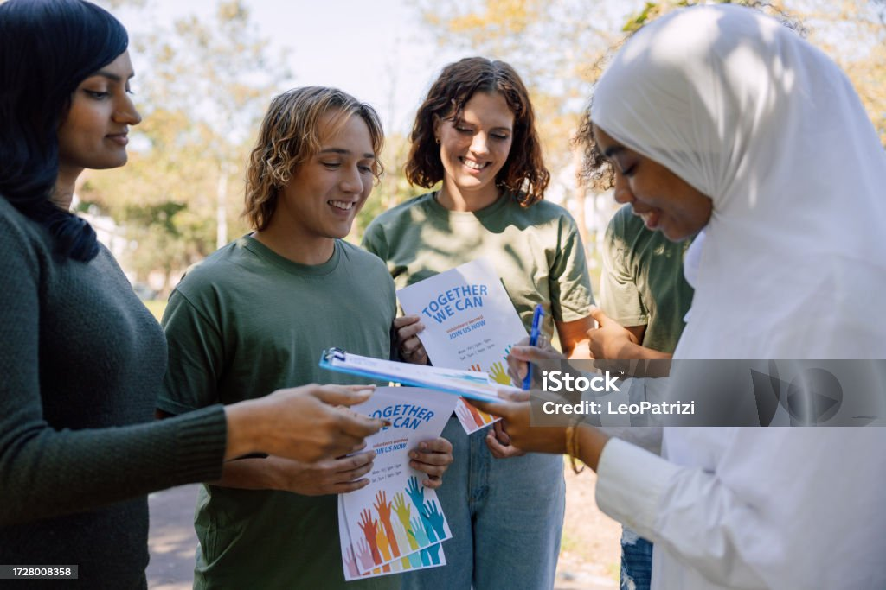

There are different ways you can support Tabby Cats Rescue. Including:
Donating
We accept donations through PayPal. If you would like to make a donation to Tabby Cats Rescue,
please email us and we will share the details of our PayPal account with you.
We also accept donations of cat and kitten food, litter, toys and scratching posts. If you would
like to donate these, please get in touch via email with details of what you would like to
donate, and we will organise delivery/collection with you.

Fundraising
The Tabby Cats Rescue has been operating for 20 years and we have hundreds of cats in this time.
If you would like to go the extra mile to help cats in need and protect a piece of Pocklington
history then we have plenty of fun ideas down below.
We couldn’t do the work we do without your support.
Fundraising helps us give the best possible care to our cats in need. It can also be a fun
experience for everyone involved. So if you love running, reading, dancing, baking, quizzing,
climbing, writing, drawing, then do what you do best and shine for our beautiful cats and
kittens.
After you’ve done your wonderful work raising funds, you’ll want to know how to send them to our
cats in need!

Is there anything you want to say?